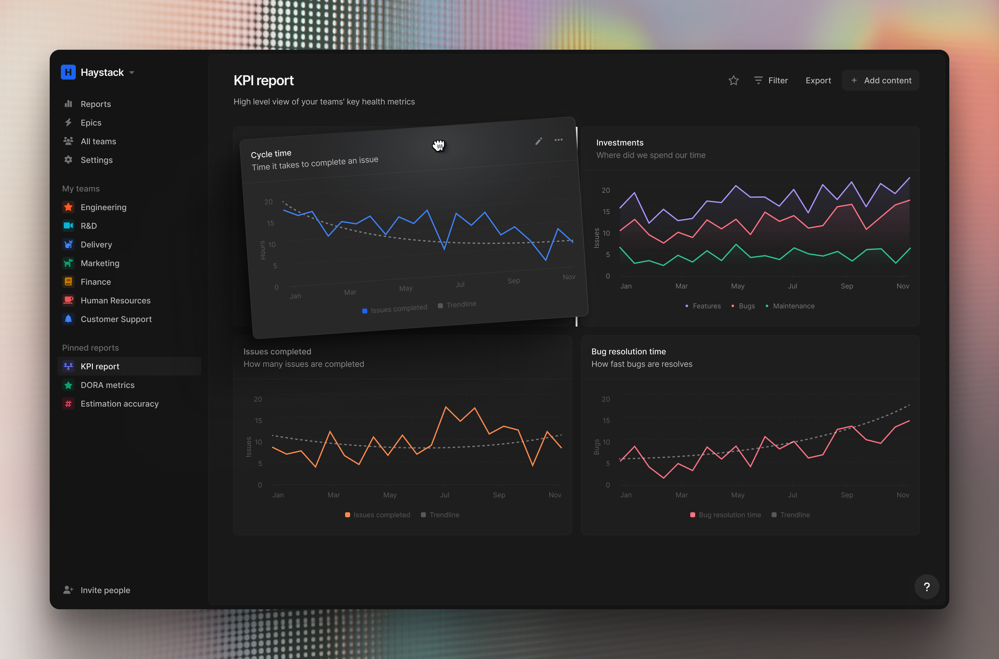
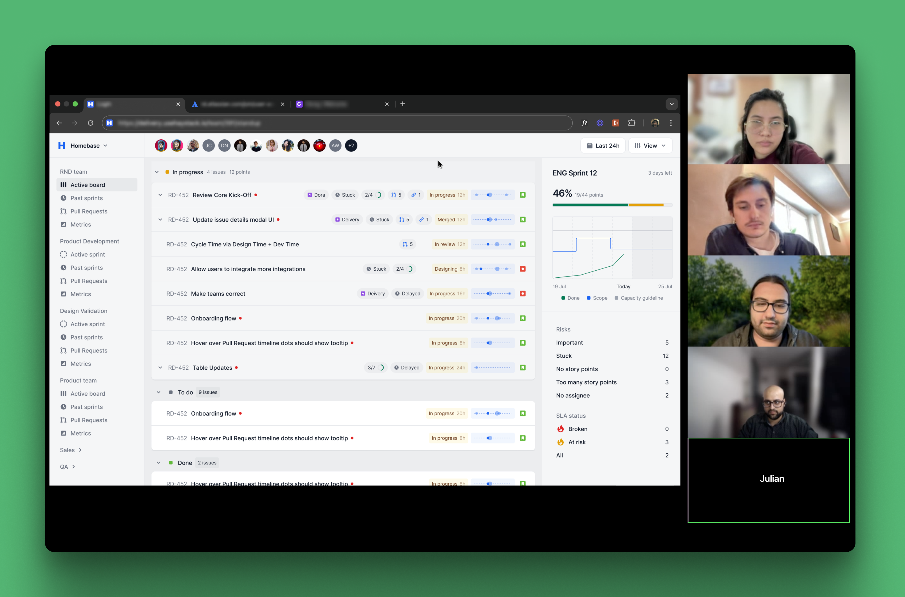
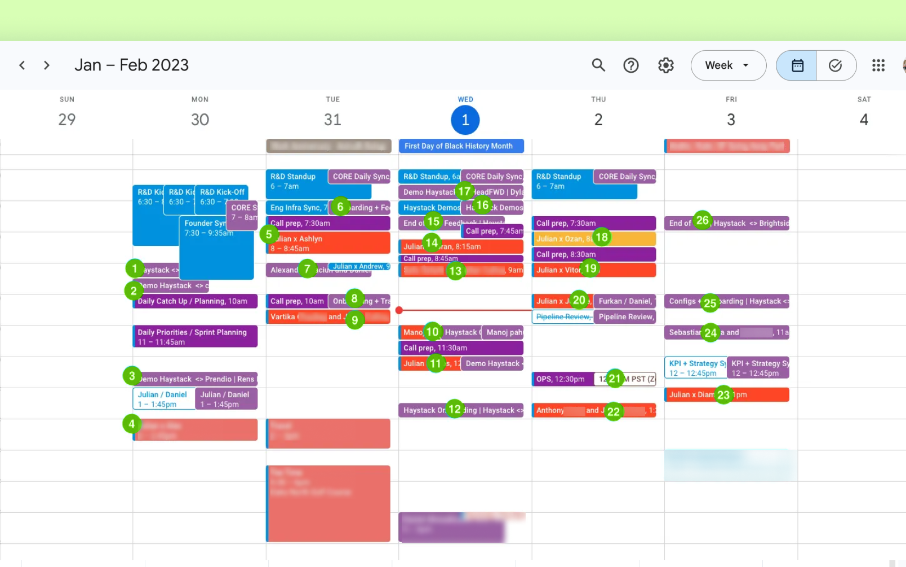
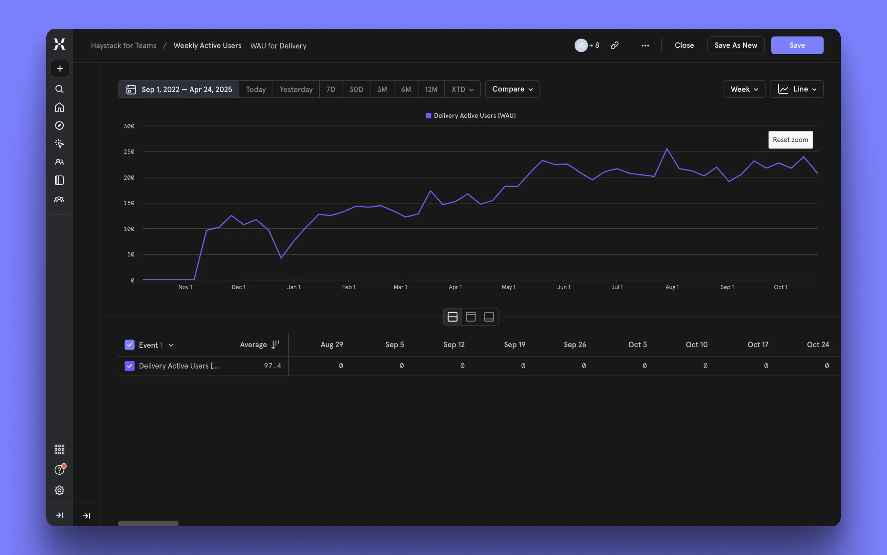

How we reached 1M ARR at Haystack
In early 2022, Haystack’s product helped VPs track software delivery metrics, but engineering managers were still buried in Jira’s noise. We were on a mission—to build something that would bridge this gap and drive growth.

Context & goals
Engineering executives already loved how Haystack helped them keep a pulse on their organization's health and track key metrics. However, they were typically the only Haystack customer in their organization, so when they changed workplaces, we often lost the entire organization as a client.
Our assumption was: If we expand beyond executive users to capture a broader market of engineering managers, we will engage more people per company, which will protect us from unexpected churn and ultimately increase revenue.
Initial validation
Our primary goal was to quickly validate whether engineering managers found enough value in our ideas to pay for them.
We compiled a list of features to validate, drawing from both competitor analysis and internal brainstorming. I then created initial prototypes designed to look like a finished product, with screens that would strengthen our pitch.

Then we started reaching out to existing customers and asked them to connect us with engineering managers (EMs) in their organizations. Julian (CEO at Haystack) showcased these features to EMs and smoke tested ideas.
We iterated between calls based on learnings until we got our first
I'd probably buy that
response. Within a month, we had early proof that the idea
was viable—a few customers expressed interest in paying for it (even though it wasn't built yet!).

Building our first feature
In the next month we decided to spend more efforts on this idea. That’s when Furkan (software engineer) joined our team to help us actually build this product. Out of all ideas we tested in a previous step, we focused on the 4 most anticipated jobs:
- Track progress since the last check-in (daily stand-ups)
- Understand whether we are on or off track against the sprint goal
- Monitor changes to the sprint plan
- Identify blocked work
Our strategy centered on rapid development and continuous improvement. We first built a quick version, used it in our internal stand-ups, and shared it with early adopters. Through daily testing and iterations, we refined the product until we were confident it was ready for broader release.

The biggest challenge? Designing and releasing at a daily pace. At first, preparing enough work for three engineers each morning seemed impossible. But gradually, through our discussions, we developed such a shared understanding that formal design handoffs became unnecessary.
After countless iterations, we finally felt ready to actually sell it to customers.
Expanding our workflow coverage
Even though we received a ton of positive feedback from our customers, we still had a hard time to sell it. After tons of discussions we realized, that value we provide was not sufficient to actually consider paying for it. We needed to build up enough value to justify our pricing. Therefore, we decided to explore additional workflows:
- Retrospect. Sprint summaries and analysis
- Report to executives. Automated sprint over sprint reporting to execs
- Unblock people. Slack notifications for emerging delivery issues
High-level approach was similar: quickly release, test, iterate.

Executive buy-in: The missing piece
As the product evolved, we saw an increase in weekly active users and gained new customers. However, selling the product remained challenging.
While we had built a separate product for Engineering Managers from the ground up, it offered minimal value for executives—who were typically the decision-makers for purchases. Therefore, we decided to shift our focus to that persona.
We shipped a Customizable Reporting dashboard. It was used during onboarding call where Customer Success guided setup for tailored reports:
Results & impact
By April 2025, here are the key results we achieved:
- $1.1M ARR by April 2025
- 60+ customers, including Schneider Electric, Visa, Shutterstock and Cameo
- Weekly active users grew to 200+

My key takeaways
While writing this case study, I noticed something unexpected: I kept talking about us—the team—instead of just me. This wasn't planned, but it felt natural. For the first time, I wasn't trying to inflate my importance or sound impressive. I was simply being honest.
And that honesty led to a realization.
There's a widespread belief in our field that UX and product designers must be the ultimate experts on users. After all, we're the "user experience" people, right? But this isn't actually true. Designers typically have fewer direct customer conversations than customer success teams, sales representatives, or leadership. Yet we often feel pressured to act like we should know everything. This mindset leads to working in silos, overthinking, and overdesigning—ultimately wasting time and building features users don't need.
At Haystack, I started dropping that act. I stopped pretending I had all the answers and started listening more—especially to teammates who knew more and had something to say. That shift changed everything.
I now believe my real job as a designer begins with listening and asking. Only then should I build prototypes. When the team embraces this approach, everything improves—becoming faster, more focused, and more valuable.
If this resonates, I highly recommend talk by Paul Adams, a designer behind Intercom.